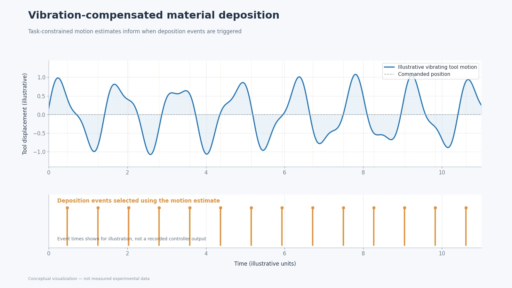

The problem
Large industrial manipulators can flex and vibrate during high-precision material deposition. Even when the planned trajectory is correct, structural motion can move the tool away from the intended location and reduce process accuracy.
Approach
I developed a factor-graph state-estimation framework to track translational vibration in the compliant manipulator. Rather than relying on sensor measurements alone, the formulation uses task-specific information, including the commanded path, to estimate the motion that affects deposition.
Closing the loop with the process
The estimated motion was coupled to deposition process control. The estimate informs when material should be deposited so the process can respond to the motion of the structure instead of treating vibration as an unmodeled disturbance.
Outcome
The combined estimation and process-control work contributed to sub-millimeter deposition accuracy. The project is being documented in “Reactive Deposition-Event Scheduling for Translational Vibration Compensation in Discrete Material Deposition Processes,” a manuscript being prepared for submission to RA-L, on which I am second author.
